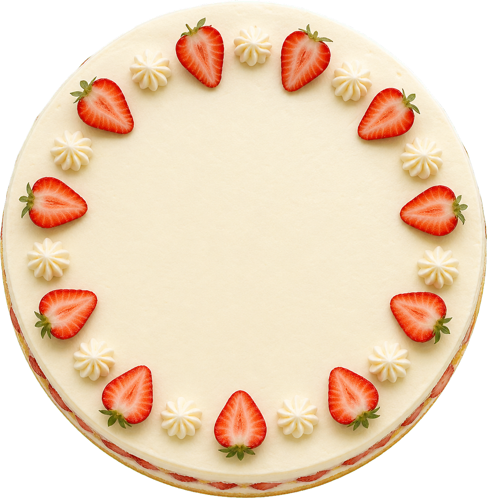
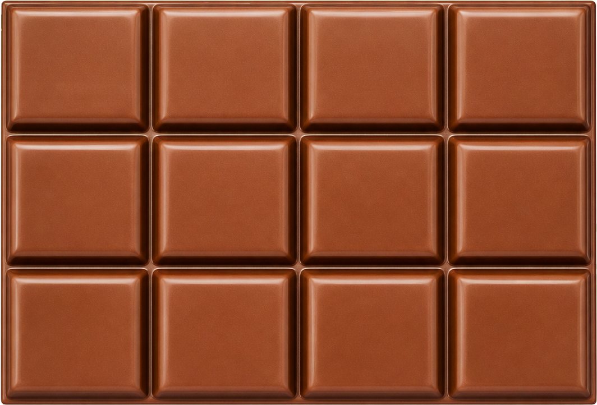

De Breukenbakkerij
Oefen breuken op verschillende manieren met pizza, taart en chocolade. Kies waarmee je wilt beginnen.



Oefen breuken op verschillende manieren met pizza, taart en chocolade. Kies waarmee je wilt beginnen.

